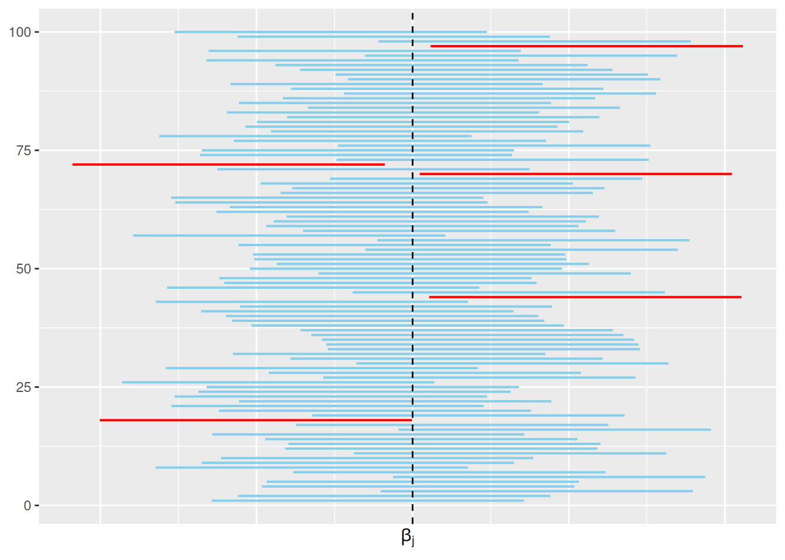

Luku 6 Epäparametrisia tilastollisia menetelmiä lineaariselle regressiolle
Palataan tässä luvussa takaisin lineaariseen regressiomalliin \[\begin{equation} \tag{6.1} y_i = \beta_0 + \beta_1 x_{i1} + \beta_2 x_{i2} + \ldots + \beta_d x_{id} + \varepsilon_i, \quad i\in\{1, \ldots, n\}. \end{equation}\] Luvussa 3.5 käsittelimme tilastollisia testejä liittyen mallin merkitsevyyteen (F-testi) ja parametrien \(\beta_j\) merkitsevyyteen (t-testi). Nämä testit ovat parametrisia, koska testeissä oletamme satunaisvirheiden noudattavan normaalijakaumaa – satunnaisvirheet ovat määritelmän 3.1 mukaista valkoista kohinaa.
Kuitenkin usein on kohtuutonta olettaa, että satunnaistermit \(\varepsilon_i\) noudattavat jotain tiettyä parametrista jakaumaa kuten normaalijakaumaa. Tämän vuoksi tässä luvussa esittelemme epäparametrisia menetelmiä lineaarisen regression kontekstissa. Luvussa 6.1 annamme epäparametriset vastineet merkitsevyystesteille. Luvussa 6.2 esittelemme epäparametrisen menetelmän luottamusvälien muodostamiseen parametreille \(\beta_j\).
Kaikissa tämän luvun menetelmissä oletamme, että virhetermit ovat määritelmän 6.1 mukaista valkoista kohinaa. Ero siis määritelmien 3.1 ja 6.1 välillä on, että nyt emme oleta virhetermeille mitään tiettyä jakaumaa.
Määritelmä 6.1 (Valkoinen kohina) Mallin (6.1) virheet \(\varepsilon_i\) ovat satunnaismuuttujia, joille pätee seuraavat oletukset.
Satunnaisvirheet \(\varepsilon_i\) ovat riippumattomia ja samoin jakautuneita.
Kaikkien satunnaisvirheiden \(\varepsilon_i\) odotusarvo on nolla ja varianssi ei riipu indeksistä \(i\) eli \[\begin{equation*} \mathbb{E}(\varepsilon_i) = 0 \quad\text{ja}\quad \mathrm{Var}(\varepsilon_i) = \sigma^2 > 0 \quad\text{kaikille}\quad i\in\{1,\ldots, n\}. \end{equation*}\]
6.2 Uusiomenetelmä
Luottamusväli on eräs menetelmä kuvata parametriin liittyvää epävarmuutta. Tässä tapauksessa olemme kiinnostuneita luottamusväleistä lineaarisen mallin \[\begin{equation*} y_i = \beta_0 + \beta_1 x_{i1} + \beta_2 x_{i2} + \ldots + \beta_d x_{id} + \varepsilon_i, \quad i\in\{1, \ldots, n\}, \end{equation*}\] vakiotermille \(\beta_0\) ja kertoimille \(\beta_1, \ldots, \beta_j\). Muista, että parametrit \(\beta_j\) ovat vakioita ja luottamusvälit ovat datasta riippuvia satunnaisia välejä. Eli \((1-\alpha)\)-luottamusväli parametrille \(\beta_j\) on satunnainen väli, joka sisältää todellisen todellisen parametrin arvon todennäköisyydellä \(1-\alpha\). Esimerkiksi \(0.95\)-luottamusväli voidaan tulkita seuraavasti.
Otoksen \[\begin{equation*} \left\{\underbrace{(y_1, x_{11}, x_{12}, \ldots, x_{1d})}_{\text{$d$-uloinen havainto nro $1$}}, \ldots, \underbrace{(y_n, x_{n1}, x_{n2}, \ldots, x_{nd})}_{\text{$d$-uloinen havainto nro $n$}}\right\} \end{equation*}\] avulla lasket \(0.95\)-luottamusvälin parametrille \(\beta_j\).
Oletetaan, että sinulla on saatavilla \(99\) ylimääräistä kohdan 1 mukaista otosta. Lasket kaikista otoksista \(0.95\)-luottamusvälin parametrille \(\beta_j\). Lopulta saat siis yhteensä sata \(0.95\)-luottamusväliä.
Koska luottamusväli on satunnainen, niin jokainen väli on hieman erilainen. Lisäksi koska parametrin \(\beta_j\) arvo on tuntematon, niin et tiedä, mitkä lasketuista väleistä peittävät parametrin todellisen arvon. Kuitenkin noin \(95\) lasketuista luottamusväleistä sisältävät parametrin arvon \(\beta_j\). Kuva 6.1 havainnollistaa \(0.95\)-luottamusvälin tulkintaa.
Tarkemmin luottamusvälin käsitettä voit kerrata kurssilta Tilastotieteen perusteet.

Kuva 6.1: Sata \(0.95\)-luottamusväliä parametrille \(\beta_j\). Siniset välit peittävät parametrin todellisen arvon ja punaiset eivät. Tässä tapauksessa viisi väliä sadasta eivät sisällä parametria \(\beta_j\).
Tässä olemme kiinnostuneita laskemaan luottamusvälin parametrille \(\beta_j\) uusiomenetelmällä (eng: bootstrap method), joka on epäparametrinen menetelmä luottamusvälien muodostamiseen. Alla kuvaamme, kuinka \((1-\alpha)\)-luottamusväli muodostetaan parametrille \(\beta_j\) uusiomenetelmällä askel askeleelta.
Olkoon \[\begin{equation*} \overrightarrow{Z}^{(1)} = \left\{(y_1, x_{11}, x_{12}, \ldots, x_{1d}), \ldots, (y_n, x_{n1}, x_{n2}, \ldots, x_{nd})\right\} \end{equation*}\] alkuperäinen otos, jonka otoskoko on \(n\). Muodosta uusi \(n\) kokoinen otos \(\overrightarrow{Z}^{(2)}\) palautusotannalla alkuperäisestä otoksesta \(\overrightarrow{Z}^{(1)}\). Uutta otosta kutsumme \(\overrightarrow{Z}^{(2)}\) kutsutaan uusio-otokseksi (eng: bootstrap sample).
- Palautusotanta: valitset havaintoja \((y_i, x_{i1}, x_{i2}, \ldots, x_{id})\) alkuperäsistä otoksestä satunnaisesti niin, että sama havainto voidaan valita useampaan kertaan.
Laske estimaatti \(\hat{\boldsymbol\beta}^{(2)} = \left(\hat\beta_0^{(2)}, \hat\beta_2^{(2)}, \ldots, \hat\beta_d^{(2)}\right)^T\) pienimmän muodostetusta uusio-otoksesta \(\overrightarrow{Z}^{(2)}\).
Toista edelliset askeleet \(m - 1\) kertaa (esimerkiksi \(m = 999\)).
Nappaa alkuperäisen otoksen \(\overrightarrow{Z}^{(1)}\) avulla laskettu estimaatti \(\hat\beta_j^{(1)}\) parametrille \(\beta_j\). Poimi myös uusio-otosten avulla lasketut estimaatit \(\hat\beta_j^{(2)}, \ldots, \hat\beta_j^{(m)}\).
Järjestä estimaatit \(\hat\beta_j^{(1)}, \hat\beta_j^{(2)}, \ldots, \hat\beta_j^{(m)}\) suuruusjärjestykseen. Aseta luottamusvälin alapääksi \(\lfloor\frac{\alpha}{2}\times m\rfloor\) järjestetty estimaatti. Aseta luottamusvälin yläpääksi \(\lceil\frac{\alpha}{2}\times m\rceil\) järjestetty estimaatti.
Uusiomenetelmän ideana on siis luoda uusia otoksia alkuperäisestä otoksesta, joiden avulla laskettuja estimaatteja käytetään luottamusvälin muodostamiseen. Englanninkielinen nimitys bootstrap viittaakin itsensä nostamiseen ylös suosta vetämällä tarpeeksi kovaa omista kengännauhoista. Tämä on tietenkin fyysisesti mahdotonta mutta kuvaa hyvin sitä, kuinka uusiomenetelmässä luodaan uusia otoksia alkuperäistä.
Huomautus 6.1 Plaa